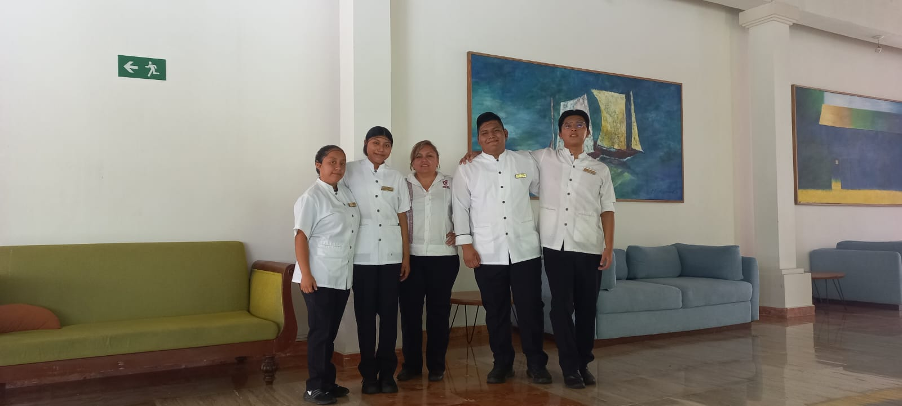
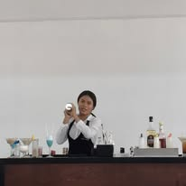
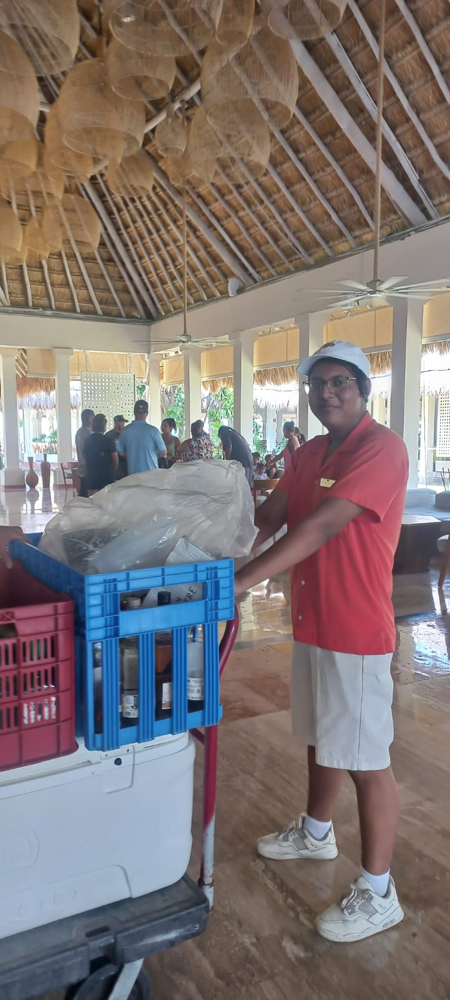
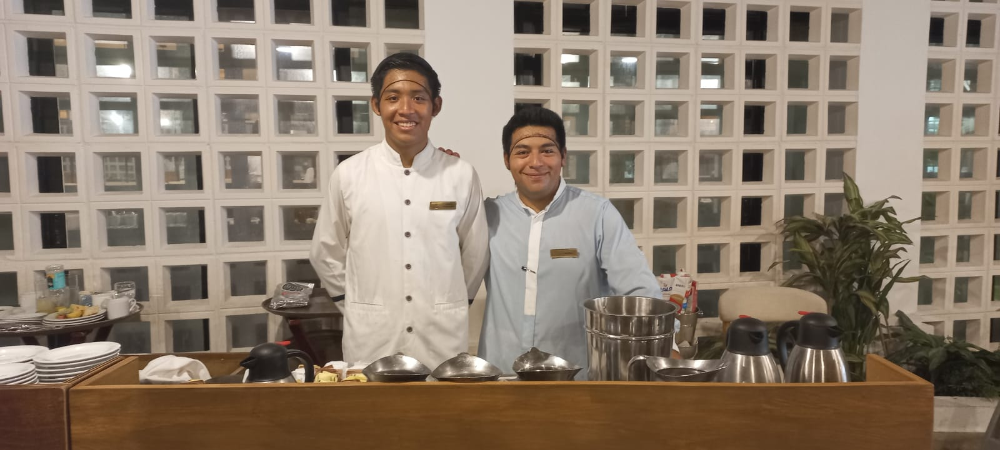
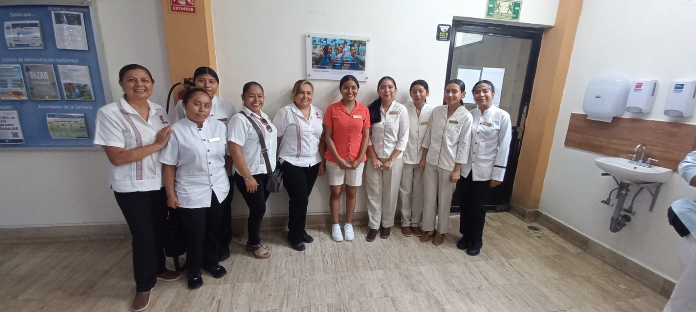

Prácticas Profesionales
CBTIS 272 "Sor Juana Inés de la Cruz"
Prácticas Profesionales
Las prácticas Profesionales propone la estancia temporal de los alumnos en las empresas o instituciones del sector productivo de bienes y servicios, donde éstos realizarán actividades propias, acordes a su perfil profesional, permitiéndoles así, conocer los procesos de producción directamente en el entorno laboral y, al mismo tiempo, les brindará la oportunidad de adquirir conocimientos durante su preparación profesional.
Objetivo Y Alcance
- Objetivo: Contribuir a la formación integral del educando mediante la aplicación directa de sus conocimientos adquiridos para fomentar el desarrollo de una conciencia de solidaridad y compromiso profesional con su comunidad, mediante una metodología que permita a los alumnos adquirir experiencias y vivencias que favorezcan su capacidad de observación, análisis, formación académica y laboral y despertar en los alumnos el interés por el trabajo, sentido de responsabilidad y capacidad de mando para un mejor desenvolvimiento profesional.
- Alcance: Poner en práctica los conocimientos y habilidades adquiridas tanto en la educación como en actividades externas realizadas por los estudiantes de acuerdo a Todas las carreras que se ofrecen en el plantel preparación de alimentos y bebidas, ventas y programación.
Procedimiento
- Serán candidatos a realizar prácticas profesionales los alumnos regulares inscritos en el bachillerato tecnológico industrial y de servicios que hayan acreditado el 80% de las asignaturas tener la disponibilidad de cumplir las 240 horas que se piden para la liberación de las practicas.
- Los alumnos deben informar al departamento de vinculación donde realizara sus practicas para crear convenio con la empresa en caso de no tenerlo.
- Al realizar dicho convenio se procede a entregar la carta de presentación y recibir la carta de aceptación por parte de la empresa.
Requisitos para Realizar Prácticas Profesionales
El alumno(a) deberá llenar y entregar al departamento de vinculación los siguientes documentos:
- La de solicitud de Practicas Profesionales.
- La carta compromiso.
- La carta de autorización de su padre , madre o tutor con su INE.
- Planeación de las actividades a desarrollar.
- Los 4 formatos debidamente llenados.
- El acuse de recibo de la carta de presentación, la carta de aceptación de la institución y la carta de terminación de las practicas profesionales.
NOTA: Se le entregara al alumno la carta de acreditación de las practicas profesionales al final del término del periodo.
Documentos que debe entregar el estudiante
- Carta de presentacion.
- Carta de aceptacion.
- Lineamientos de prácticas profesionales.
- 3 Informes de actividades.
- Planeación de actividades
- Constancia de Acreditación
📷 Fotos destacadas

Práctica administrativa

Capacitación en cocina

Trabajo en equipo

Trabajo en equipo
Trabajo en equipo

Trabajo en equipo
Documentos para Descargar
Formatos para prácticas profesionales:
📌 Plantillas y Ejemplos
Descarga un ejemplo ya llenado y la plantilla editable si tu empresa no tiene convenio: